For this assignment, I decided to create my own basic clapperboard.

I like movies, so this is a cool desk toy that I can build myself - an entertaining if it has a nice "clack" to it.

I started with a design similar to the one shown on the Wikipedia page, making the top part of the clapperboard first -- a simple rectangle with a hole for the fastener. I added a fillet to the rectangle so that the top part of the board can rotate freely from 0 to 90 degrees vertically. Note that the fillet circle is concentric to the fastener hole.

I created two different holes -- one for the full diameter of the fastener head (as a reference), and one for the fastener body, the latter of which would be used in the final cutting.
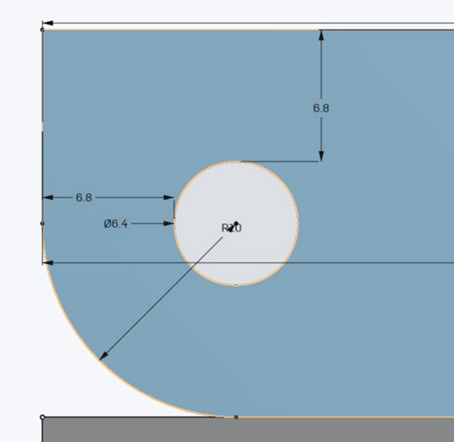
I then created the bottom part of the clapperboard -- using two holes so that the upper part would stay in place snugly.
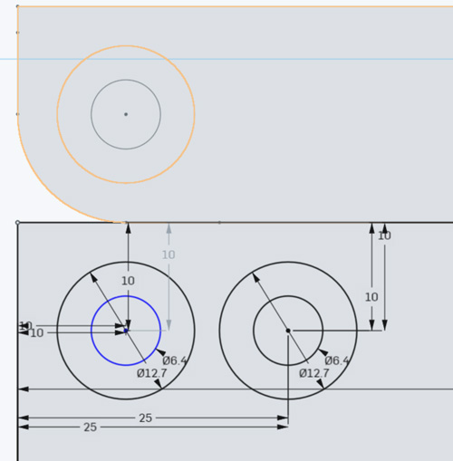
After the two main parts, I created a plate that would connect both.
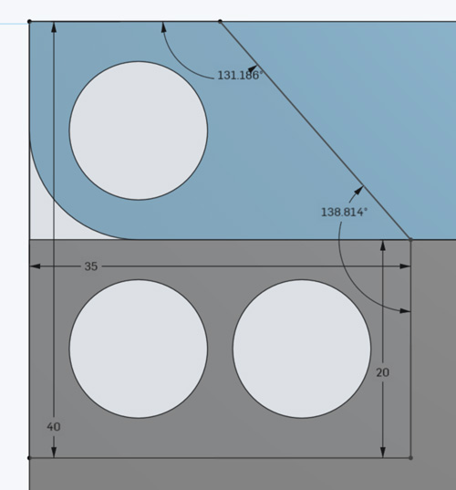
After the components were outlined, I extruded the parts, and played a bit with the shading to see how this would work on the final clapperboard -- all seemed to work.
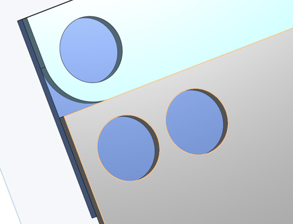
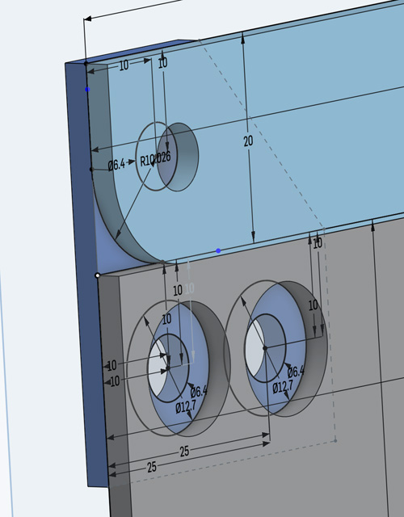
After all the measures were in place, I deleted the larger circles so that only the smaller holes -- would remain.
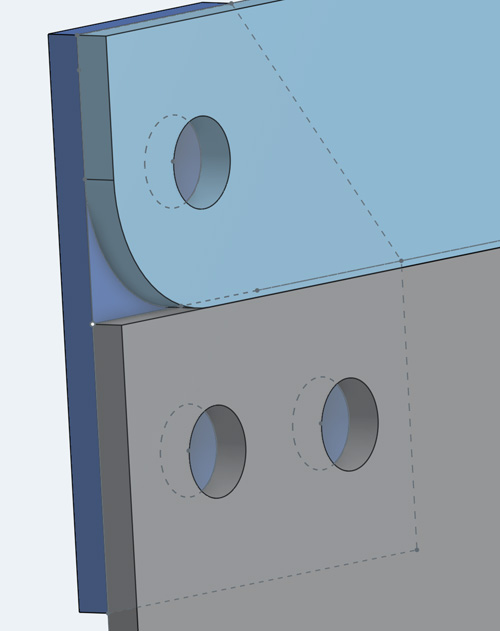
I imported Joshua's model of the fastener, and created the logic for the connectors, and placed the fastener into my model.
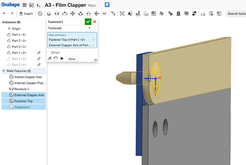
I configured the limits to validate that the rotating motion looked good:
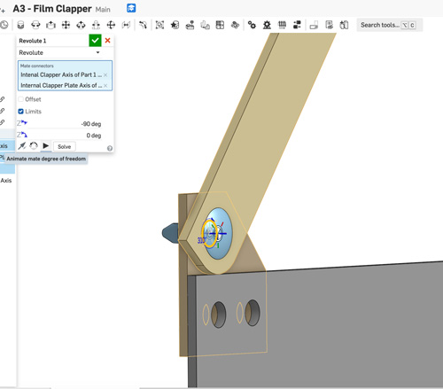
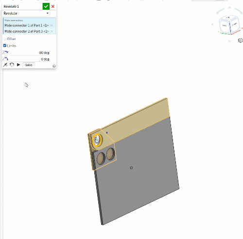
With all these details, I exported the sketches to DWF to cut out in carboard first.
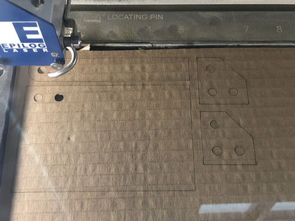
The laser cutter settings for cutting the cardboard were: speed 50%, power=100%, frequency 100%.
Then used the same vectors for acrylic.
The laser cutter settings for cutting the acrylic were the same as last time: speed 8%, power=100%, frequency 100%.
The outcome of the acrylic cut was pretty nice.
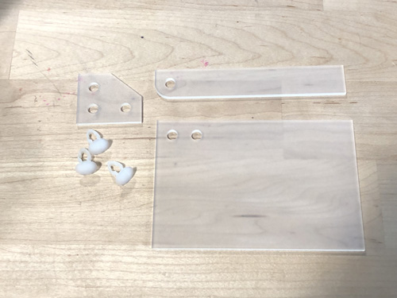
After some light assembly
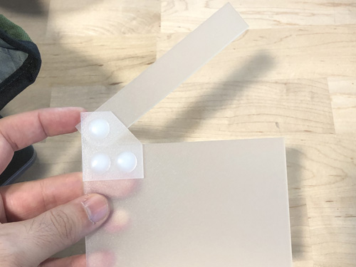
Both prototypes looked quite nice, and had a great "clack".
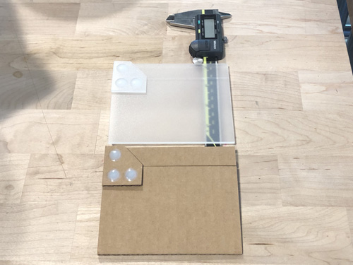
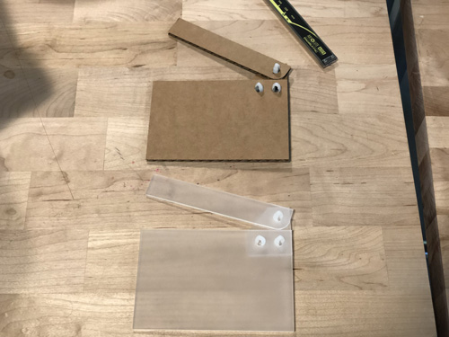
The acrylic version was a bit wobblier than the cardboard one, so as a next iteration, I'd prob make the circles smaller so that the fasteners sit tighter.
Source files for the clapperboard:
- OnShape Clapperboard object
- DXF: Top part of the clapperboard
- DXF: Bottom part of the clapperboard
- DXF: Linking plate